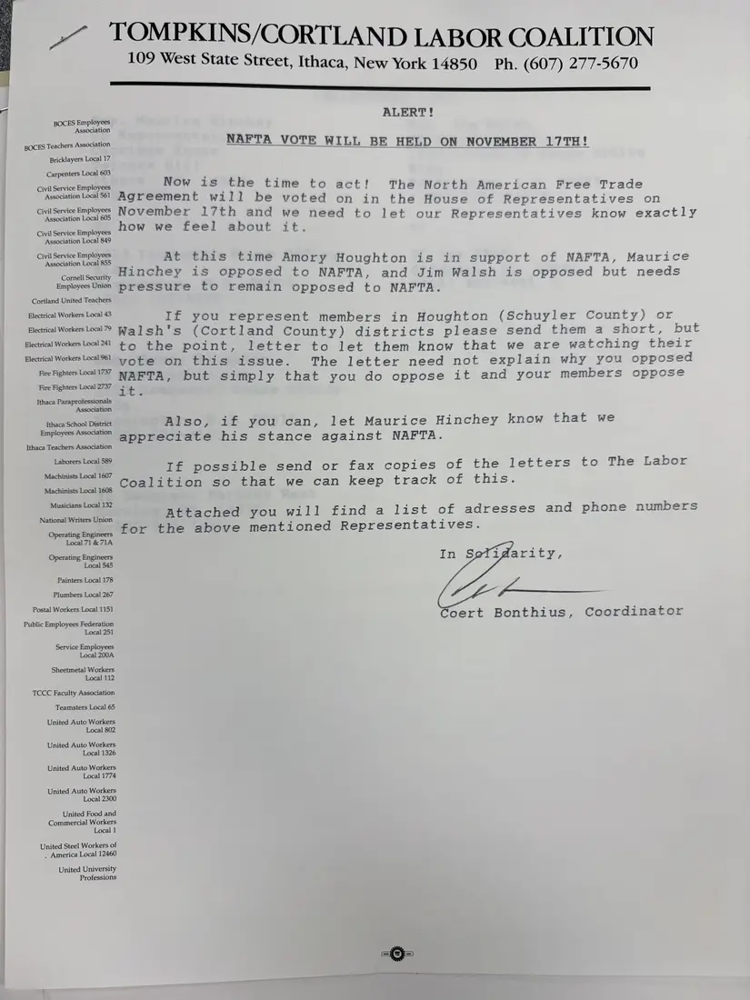
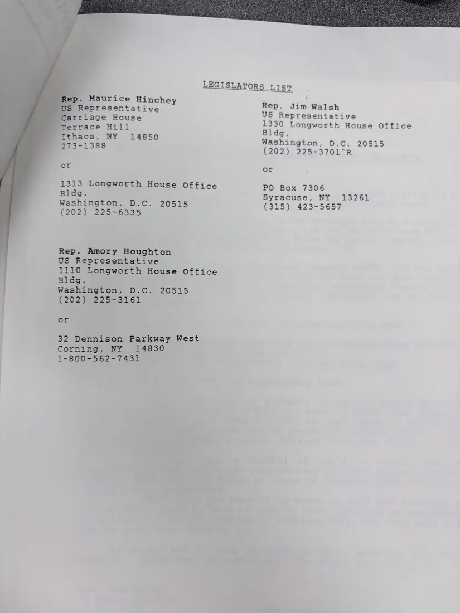
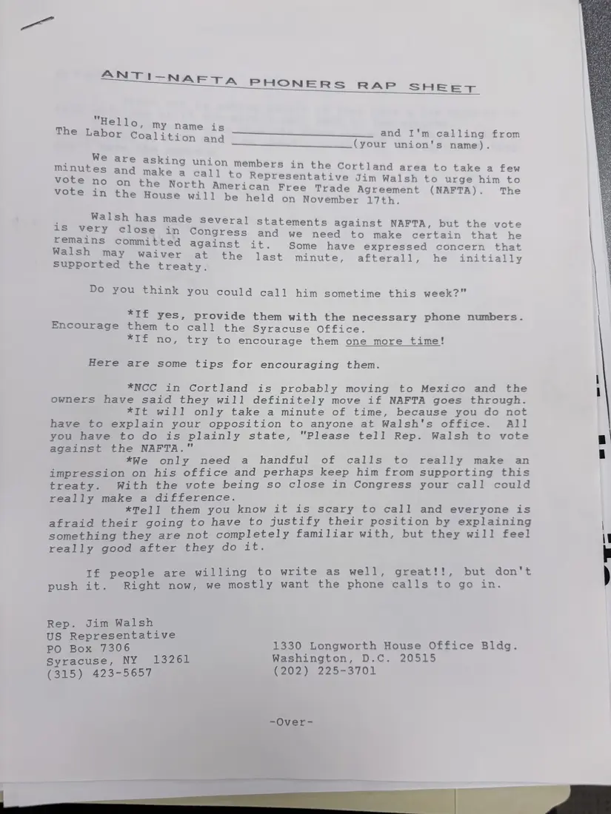
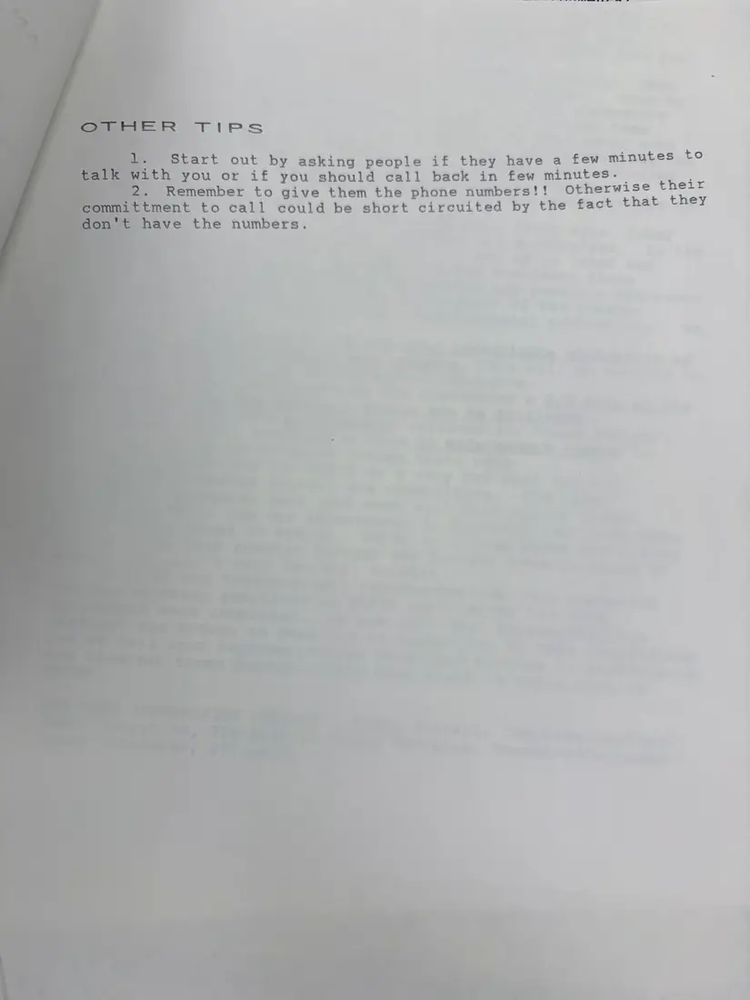

Letter, 4 pages
NAFTA alert to member unions, with legislators list and phone-bank script
[October–November 1993]Date inferred
Coordinator Coert Bonthius urges member unions to write their representatives before the November 17 House vote on NAFTA: Amory Houghton supported it, Maurice Hinchey opposed it, and Jim Walsh opposed it but needed pressure. Enclosed are a list of the three representatives' offices and an “Anti-NAFTA Phoners Rap Sheet” and tips for calling union members in the Cortland area.
A second photograph of the rap sheet is not shown.
Download or cite this itemPages


(open zoom view)Read the page text (machine-read, mostly readable)
This text was generated automatically from the photograph and has not been corrected. The image is the authoritative record.
TOMPKINS/CORTLAND LABOR COALITION
109 West State Street, Ithaca, New York 14850 Ph. (607) 277-5670
SSS
BOCES Employees
Association
BOCES Teachers Association
Bricklayers Local 17
Carpenters Local 603
Civil Service Employees
Association Local 561
Civil Service Employees
Association Local 605
Civil Service Employees
Association Local 849
Civil Service Employees
Association Local 855
Cornell Security
Employees Union
Cortland United Teachers
Electrical Workers Local 43
Electrical Workers Local 79
Electrical Workers Local 241
Electrical Workers Local 961
Fire Fighters Local 1737
Fire Fighters Local 2737
Ithaca Paraprofessionals
Association
Ithaca School District
Employees Association
Ithaca Teachers Association
Laborers Local 589
Machinists Local 1607
Machinists Local 1608
Musicians Local 132
National Writers Union
Operating Engineers
Local 71 & 71A
Operating Engineers
Local 545
Painters Local 178
Plumbers Local 267
Postal Workers Local 1151
Public Employees Federation
Local 251
Service Employees
Local 200A
Sheetmetal Workers
Local 112
TCCC Faculty Association
Teamsters Local 65
United Auto Workers
Local 802
United Auto Workers
Local 1326
United Auto Workers
Local 1774
United Auto Workers
Local 2300
United Food and
Commercial Workers
Local 1
United Steel Workers of
. America Local 12460
United University
Professions
ALERT!
NAFTA VOTE WILL BE HELD ON NOVEMBER 17TH!
Now is the time to act!
’ {! The North American Free Trade
Agreement will be voted on in the House of Representatives on
November 17th and we need t
wimeisies tt -0 let our Representatives know exactly
nd “gi this time Amory Houghton is in support of NAFTA, Maurice
inchey is opposed to NAFTA, and Jim Walsh is opposed but needs
pressure to remain opposed to NAFTA.
If you represent members in Houghton (Schuyler Count or
Walsh's (Cortland County) districts please send them a Bioees but
to the point, letter to let them know that we are watching their
vote on this issue. The letter need not explain why you opposed
ig ae but simply that you do oppose it and your members oppose
Also, if you can, let Maurice Hinchey know that we
appreciate his stance against NAFTA.
If possible send or fax copies of the letters to The Labor
Coalition so that we can keep track of this.
Attached you will find a list of adresses and phone numbers
for the above mentioned Representatives.
In Sefidarity,
Coert Bonthius, Coordinator

(open zoom view)Read the page text (machine-read, mostly readable)
This text was generated automatically from the photograph and has not been corrected. The image is the authoritative record.
LEGISLATORS LIST Rep. Maurice Hinchey BUS Representative Carriage House Terrace Hill Tthaca, NY 14850 273-1388 1313 Longworth House Office Bldg. Washington, D.C. 20515 (202) 225-6335 Rep. Amory Houghton US Representative 1110 Longworth House Office Bldg. Washington, D.C. 20515 (202) 225-3161 32 Dennison Parkway West Corning, AY, 143830 1-800-562-7431 Rep. Jim Walsh US Representative 1330 Longworth House Office Bldg. Washington, D.C. 20515 (202) 225-3701*R PO Box 7306 Syracuse, NY 13261 (315) 423-5657


(open zoom view)Read the page text (machine-read, mostly readable)
This text was generated automatically from the photograph and has not been corrected. The image is the authoritative record.
ANT 1— I-~NAFTA PHONERS RAP SHEET "Hello, my n ; The Labor Coa oo ee liddicn and a and I'm calling from (your union's name). We are aski ; : sking union minutes and mak vote no on the vote in the Hou members in the Cortland area to take a few ea call to Representative Jim Walsh to urge him to North American Free Trade Agreement (NAFTA). The se will be held on November Ltn. ie Mere ieee made several statements against NAFTA, but the vote ot close in Congress and we need to make certain that he S committed against it. Some have expressed concern that W WwW V ast minute, afterall , he ¥ Do you think you could call him sometime this week?" *If yes, provide them with the necessary phone numbers. Encourage them to call the Syracuse Office. Bia nyo, try to encourage them one more time! Here are some tips for encouraging them. *NCC in Cortland is probably moving to Mexico and the owners have said they will definitely move if NAFTA goes through. *Tt will only take a minute of time, because you do not have to explain your opposition to anyone at Walsh's office. All you have to do is plainly state, "Please tell Rep. Walsh to vote against the NAFTA." *We only need a handful of calls to really make an impression on his office and perhaps keep him from supporting this treaty. With the vote being so close in Congress your call could really make a difference. *Tell them you know it is scary to call and everyone is afraid their going to have to justify their position by explaining something they are not completely familiar with, but they will feel really good after they do it. If people are willing to write as well, great!!, but don't push it. Right now, we mostly want the phone calls to go in. Rep. Jim Walsh US Representative PO Box 7306 1330 Longworth House Office Bldg. Syracuse, NY 13261 Washington, D.C. 20515 (315) 423-5657 (202). 225-3701 -Over-


(open zoom view)Read the page text (machine-read, mostly readable)
This text was generated automatically from the photograph and has not been corrected. The image is the authoritative record.
Start out by asking people if they have a few minutes to h you or if you should call back in few minutes. OF oii Remember to give them the phone numbers!! Otherwise int ent to call could be short circuited by the fact that y ve the numbers.
See something wrong, or recognize a person or event? Send a correction. If you hold rights in this item or think it should not be public, write to the same address.